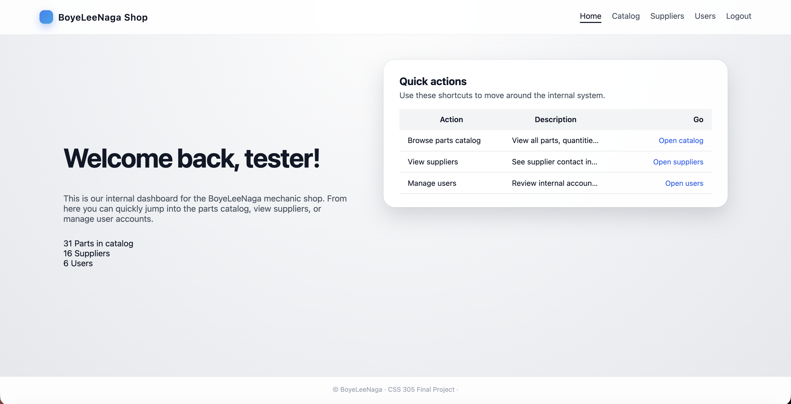
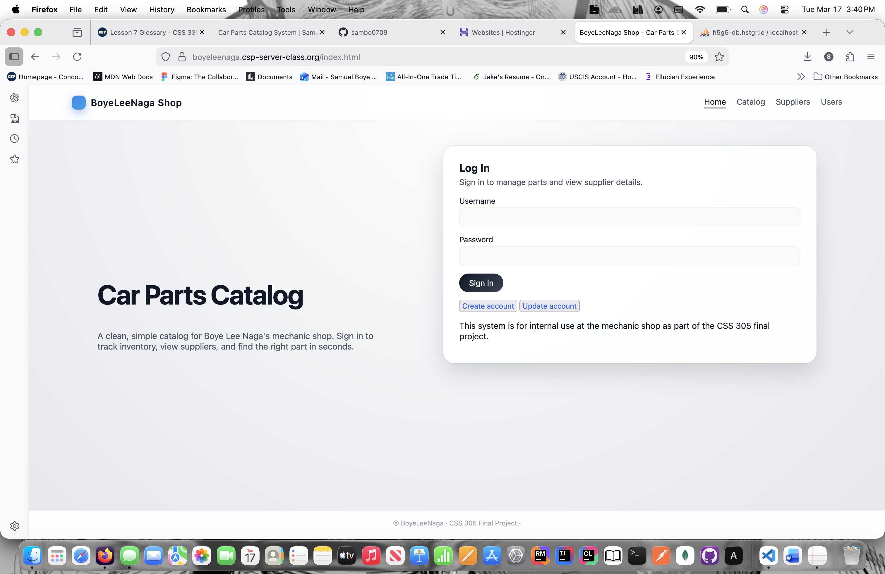
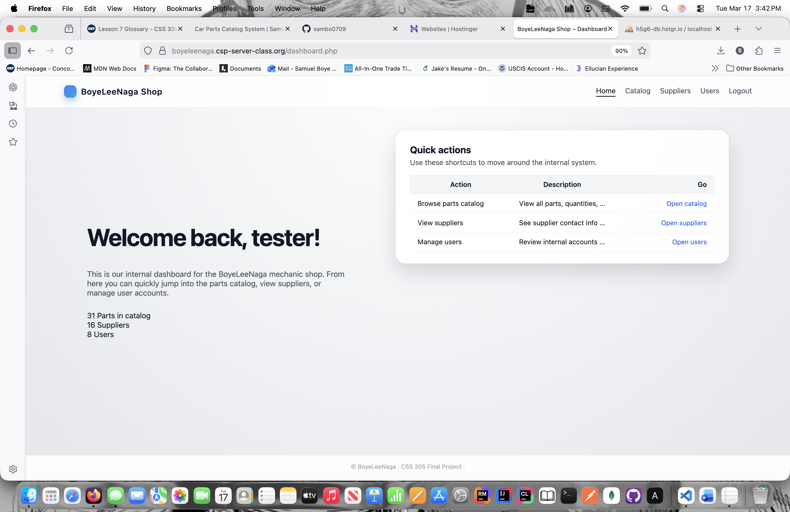
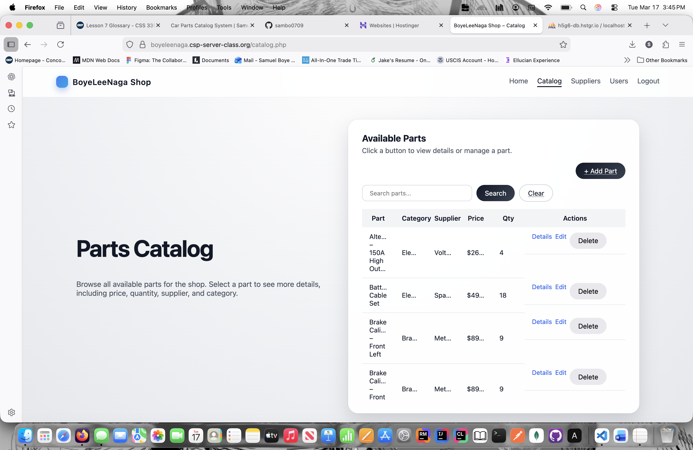
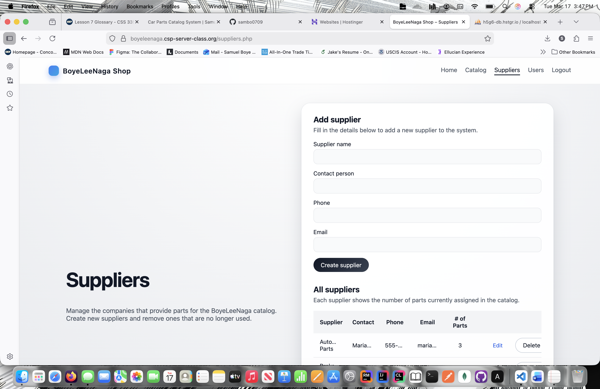
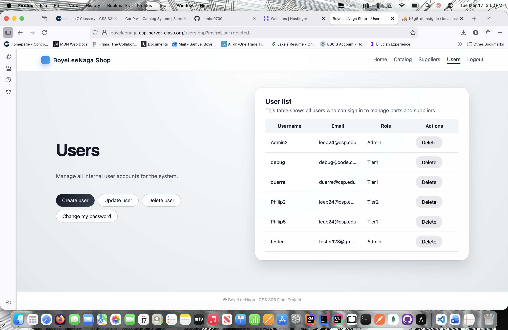

Car Parts Catalog System

Full-stack internal inventory management system for a mechanic shop, built with PHP, MySQL, session-based authentication, and secure CRUD workflows.
Built a full-stack inventory management system for an internal car parts catalog. The application supports secure authentication, role-based access control, parts management, supplier management, user administration, and dashboard reporting in a multi-page PHP and MySQL application.
System Overview
This project was designed as an internal shop management system where authenticated users can browse and manage inventory data. Admin users can manage all users and roles, while non-admin users can view and update only their own account information. The system also supports catalog search, supplier relationships, account updates, and password changes.
Technologies Used
- PHP
- MySQL
- HTML
- CSS
- Session-Based Authentication
- Prepared Statements
- CSRF Protection
Key Features
- Secure login and logout with password hashing and session handling
- Role-based access control for Admin and non-admin users
- Full CRUD functionality for parts and suppliers
- User management with account update, delete, and password change workflows
- Search and filtering for catalog items
- Dashboard view with system counts for parts, suppliers, and users
Security Features
- Passwords verified with secure hashing functions
- Session-based access protection for authenticated pages
- CSRF tokens used on modifying form requests
- Prepared SQL statements used for safer database operations
Technical Architecture
- Frontend: HTML, CSS
- Backend: PHP
- Database: MySQL
- Security: Sessions, CSRF tokens, password hashing
- Application Style: Multi-page server-rendered full-stack web app
Application Screenshots
Login Page

Dashboard

Catalog and Inventory

Supplier Management

User Management

What I Learned
This project significantly improved my understanding of full-stack development, backend architecture, and secure web application design. I gained experience implementing authentication systems, protecting forms with CSRF tokens, designing relational data workflows, and managing role-based permissions in a real application. I also strengthened my ability to structure larger multi-page systems with connected CRUD functionality across multiple entities.
Future Improvements
- Convert key workflows into a REST API architecture
- Add JWT-based authentication
- Build a React frontend for a more dynamic user experience
- Add pagination, advanced filtering, and reporting dashboards
Live Demo
You can access the live version of the application below. This deployment includes authentication, inventory management, and full CRUD functionality for parts, suppliers, and users.